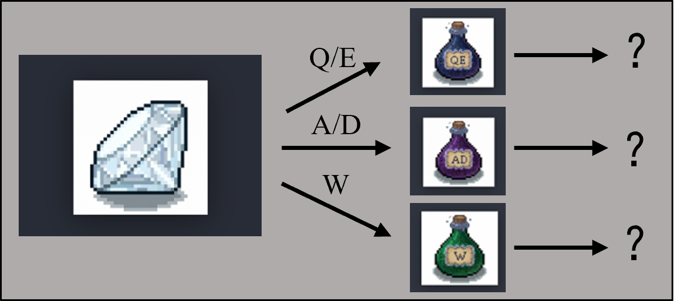
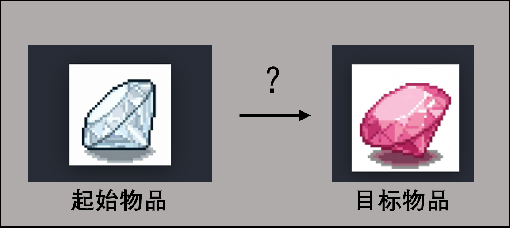

<!DOCTYPE html>
<html lang="zh-CN">
<head>
  <meta charset="UTF-8" />
  <meta name="viewport" content="width=device-width, initial-scale=1.0" />
  <title>crafting</title>
  <script src="dist/jspsych.js"></script>
  <script src="dist/plugin-html-keyboard-response.js"></script>
  <script src="dist/plugin-call-function.js"></script>
  <script src="dist/axios.min.js"></script>
  <script src="dist/naodao-2021-12.js"></script>
  <link rel="stylesheet" href="dist/jspsych.css" />
  <style>
    /* 对齐 crafting/src/main_crafting.py、mix/mix_session_guidance.py：COLOR_BG / COLOR_PANEL / 药水行 */
    body { font-family: "Segoe UI", "Microsoft YaHei", "SimHei", sans-serif; background: #1c1f26; color: #e8ecf6; }
    #jspsych-content { min-height: 100vh; padding-bottom: 32px; }
    .nc-craft-trial { max-width: 960px; margin: 0 auto; padding: 16px 22px 28px; font-size: 15px; }
    .nc-craft-panel { background: #282c36; border: 1px solid #484e5e; border-radius: 12px; padding: 14px 18px 18px; text-align: center; margin-bottom: 10px; }
    .nc-craft-cap { font-size: 13px; color: #bcc6d8; margin-bottom: 10px; text-align: left; font-weight: 600; }
    .nc-craft-gem-slot { min-height: 120px; display: flex; align-items: center; justify-content: center; padding: 8px 0; }
    .nc-craft-gem-slot--target { min-height: 100px; }
    .nc-craft-order-img { width: 88px; height: 88px; object-fit: contain; filter: drop-shadow(0 3px 8px rgba(0,0,0,.4)); }
    .nc-craft-current-img { width: 112px; height: 112px; object-fit: contain; filter: drop-shadow(0 4px 12px rgba(0,0,0,.45)); }
    .nc-craft-sub { margin-top: 8px; font-weight: 600; font-size: 16px; color: #eceff4; display: none !important; }
    .nc-potions { display: flex; flex-wrap: wrap; justify-content: center; gap: 12px; margin: 12px 0 14px; padding: 10px 8px; background: #22262e; border-radius: 10px; border: 1px solid #353c48; }
    .nc-pot { text-align: center; min-width: 100px; font-size: 12px; color: #b8c0cc; background: #30343e; border: 1px solid #444c5c; border-radius: 10px; padding: 8px 10px 10px; transition: box-shadow 0.08s ease, border-color 0.08s ease; }
    /* 对齐 NC_MIX_TASK crafting main_crafting：有效操作绿框 · 无效操作红框 */
    .nc-pot.nc-pot--flash-ok { box-shadow: 0 0 0 3px rgba(130, 220, 150, 0.95), 0 0 18px rgba(72, 168, 96, 0.45); border-color: rgba(130, 220, 150, 0.9); background: #2d3d34; }
    .nc-pot.nc-pot--flash-err { box-shadow: 0 0 0 3px rgba(230, 82, 82, 0.95), 0 0 18px rgba(230, 82, 82, 0.4); border-color: rgba(230, 82, 82, 0.95); background: #3d3436; }
    .nc-pot img { width: 52px; height: 68px; object-fit: contain; filter: drop-shadow(0 2px 4px rgba(0,0,0,.35)); }
    .nc-pot-key { display: block; margin-top: 6px; font-weight: 700; color: #ecf0f6; font-size: 13px; }
    .nc-craft-meta { text-align: center; font-size: 13px; color: #828a9a; margin-top: 6px; }
    .nc-msg { min-height: 28px; color: #f0a96e; margin-top: 12px; text-align: center; }
    .nc-craft-exp-panel { font-size: 14px; color: #bcc6d8; line-height: 1.55; margin-bottom: 12px; padding: 10px 12px; background: #22262e; border-radius: 8px; border: 1px solid #353c48; text-align: left; }
    .nc-inst { max-width: 680px; margin: 0 auto; padding: 28px 24px 36px; color: #e8ecf6; }
    .nc-inst h2 { font-size: 22px; font-weight: 600; color: #e6ebff; margin: 0 0 6px; letter-spacing: 0.02em; }
    .nc-inst .nc-inst-tag { font-size: 12px; color: #7d8696; letter-spacing: 0.06em; margin-bottom: 14px; }
    .nc-inst p { line-height: 1.72; color: #c4ccd8; margin: 0 0 12px; font-size: 15px; }
    .nc-inst p.nc-inst-hint { font-size: 14px; color: #8f98a8; margin-top: 16px; }
    .nc-inst strong { color: #eceff4; font-weight: 600; }
    /* 练习指导示意图：与导航页 nc-nav-vis-frame 风格一致 */
    .nc-inst-figure { margin: 0 0 18px; text-align: center; }
    .nc-inst-figure img {
      display: block;
      margin: 0 auto;
      max-width: 100%;
      width: min(100%, 560px);
      height: auto;
      max-height: min(48vh, 380px);
      object-fit: contain;
      border-radius: 12px;
      border: 2px solid #464c5a;
      background: #262830;
      box-sizing: border-box;
    }
    .nc-inst-figure-cap { margin: 10px 0 0; font-size: 13px; color: #8f98a8; line-height: 1.5; }
    .nc-trial-progress { text-align: center; font-size: 14px; font-weight: 600; color: #9eb4d8; letter-spacing: 0.04em; margin: 0 0 12px; padding: 8px 12px; background: #22262e; border-radius: 8px; border: 1px solid #353c48; }
  </style>
</head>
<body></body>
<script src="materials/crafting_embed.js"></script>
<script src="js/asset_resolve.js"></script>
<script src="js/config.js"></script>
<script src="js/grid_geometry.js"></script>
<script src="js/crafting_runner.js"></script>
<script>
(function () {
  if (!window.NC_MIX_CRAFT_EMBED || !window.NC_MIX_CRAFT_EMBED.rules) {
    document.body.innerHTML =
      "<div style='padding:24px;'>缺少 <code>materials/crafting_embed.js</code>。请在 <code>NC_MIX_TASK2/scripts</code> 运行 <code>python export_crafting_web.py</code> 后重试。</div>";
    return;
  }

  if (
    typeof initJsPsych !== "function" ||
    typeof jsPsychHtmlKeyboardResponse === "undefined" ||
    typeof jsPsychCallFunction === "undefined"
  ) {
    document.body.innerHTML =
      "<div style='padding:24px;line-height:1.6;max-width:560px;'>缺少 jsPsych 依赖：本目录 <code>dist/</code> 下需要存在 " +
      "<code>jspsych.js</code>、<code>jspsych.css</code>、<code>plugin-html-keyboard-response.js</code>、<code>plugin-call-function.js</code>。</div>";
    return;
  }

  var isFile = window.location.protocol === "file:";
  var extensions =
    !isFile && typeof Naodao !== "undefined" ? [{ type: Naodao }] : [];

  var rules = window.NC_MIX_CRAFT_EMBED.rules;
  var pack = window.NC_MIX_CRAFT_EMBED.trials || {};
  var trials = pack.trials || [];

  var jsPsych = initJsPsych({
    override_safe_mode: true,
    extensions: extensions,
    on_finish: function () {
      var rows = JSON.stringify(jsPsych.data.get().values(), null, 2);
      var blob = new Blob([rows], { type: "application/json;charset=utf-8" });
      var url = URL.createObjectURL(blob);
      var a = document.createElement("a");
      a.href = url;
      a.download = "crafting_nc_mix_" + Date.now() + ".json";
      a.click();
      URL.revokeObjectURL(url);
      var el = document.getElementById("jspsych-content");
      if (el) {
        el.innerHTML =
          "<div style='padding:40px;text-align:center;font-size:20px;'>数据已尝试下载。请关闭本页。</div>";
      }
    },
  });

  function showPreloadOverlay(text) {
    var host = document.getElementById("jspsych-content") || document.body;
    if (!host) return;
    host.innerHTML =
      "<div id='nc-preload-mask' style='min-height:70vh;display:flex;align-items:center;justify-content:center;'>" +
      "<div style='background:#282c36;border:1px solid #484e5e;border-radius:12px;padding:20px 24px;max-width:560px;text-align:center;'>" +
      "<div style='font-size:18px;color:#e8ecf6;margin-bottom:8px;'>正在准备实验素材</div>" +
      "<div id='nc-preload-text' style='font-size:14px;color:#bcc6d8;line-height:1.6;'>" +
      (text || "请稍候...") +
      "</div>" +
      "</div>" +
      "</div>";
  }

  function updatePreloadOverlay(text) {
    var el = document.getElementById("nc-preload-text");
    if (el) el.textContent = text;
  }

  function loadImage(url) {
    return new Promise(function (resolve) {
      var img = new Image();
      img.onload = function () {
        if (typeof img.decode === "function") {
          img.decode().then(
            function () {
              resolve(true);
            },
            function () {
              resolve(true);
            }
          );
          return;
        }
        resolve(true);
      };
      img.onerror = function () {
        resolve(false);
      };
      img.src = url;
    });
  }

  function normalizeStoneId(sid) {
    var m = /^stone_(\d+)$/i.exec(String(sid || ""));
    if (!m) return String(sid || "");
    return "stone_" + String(parseInt(m[1], 10)).padStart(2, "0");
  }

  function collectStoneIds(rulesObj, trialRows) {
    var seen = {};
    function addSid(sid) {
      var n = normalizeStoneId(sid);
      if (!n || seen[n]) return;
      seen[n] = true;
    }
    for (var i = 1; i <= 9; i++) {
      addSid("stone_" + String(i).padStart(2, "0"));
    }
    (trialRows || []).forEach(function (row) {
      if (!row) return;
      addSid(row.start_state);
      var tg = row.order_targets || [];
      tg.forEach(addSid);
    });
    var maps = [];
    if (rulesObj && typeof rulesObj === "object") {
      maps = [rulesObj.potion1, rulesObj.potion1_rev, rulesObj.potion2, rulesObj.potion2_rev, rulesObj.potion3];
    }
    maps.forEach(function (mp) {
      if (!mp || typeof mp !== "object") return;
      Object.keys(mp).forEach(function (k) {
        addSid(k);
        addSid(mp[k]);
      });
    });
    return Object.keys(seen);
  }

  async function resolveFirstWorkingUrl(cands) {
    if (!Array.isArray(cands) || !cands.length) return "";
    for (var i = 0; i < cands.length; i++) {
      var ok = await loadImage(cands[i]);
      if (ok) return cands[i];
    }
    return "";
  }

  async function preloadCraftingAssets(stoneIds) {
    var cache = { stone: {}, bottle: {} };
    var hasAssets =
      window.NCMixAssets &&
      typeof window.NCMixAssets.stoneUrlCandidates === "function" &&
      typeof window.NCMixAssets.bottleUrlCandidates === "function";
    if (!hasAssets) return cache;

    stoneIds = Array.isArray(stoneIds) && stoneIds.length ? stoneIds : collectStoneIds(rules, trials);

    var total = stoneIds.length + 3 + 2;
    var doneCount = 0;
    function bump(msg) {
      doneCount += 1;
      updatePreloadOverlay("已完成 " + doneCount + " / " + total + " · " + msg);
    }

    await loadImage("materials/intro_crafting.png");
    bump("练习指导示意图");
    await loadImage("materials/intro_crafting2.png");
    bump("正式实验指导示意图");

    for (var si = 0; si < stoneIds.length; si++) {
      var sid = stoneIds[si];
      var sUrl = await resolveFirstWorkingUrl(window.NCMixAssets.stoneUrlCandidates(sid));
      cache.stone[sid] = sUrl || "";
      bump("石块图 " + (si + 1));
    }
    for (var bi = 1; bi <= 3; bi++) {
      var bUrl = await resolveFirstWorkingUrl(window.NCMixAssets.bottleUrlCandidates(bi));
      cache.bottle[String(bi)] = bUrl || "";
      bump("药水素材 " + bi);
    }
    return cache;
  }

  /** @param trialProgress 正式试次传入 { current: n, total: N } */
  function mkCraftTrial(rules, row, phase, idx, trialProgress) {
    return {
      type: jsPsychCallFunction,
      async: true,
      func: function (done) {
        var display = jsPsych.getDisplayElement();
        NCCraftingRunner.runCraftingTrial(
          display,
          rules,
          row,
          phase,
          idx,
          function (payload) {
            done(payload);
          },
          trialProgress || null
        );
      },
      data: { screen_id: "crafting_trial", phase: phase },
    };
  }

  async function run() {
    var main = trials;

    var timeline = [];
    timeline.push({
      type: jsPsychCallFunction,
      async: true,
      func: function (done) {
        var el = jsPsych.getDisplayElement();
        el.innerHTML =
          "<div class='nc-inst'>" +
          "<h2>练习阶段</h2>" +
          "<div class='nc-inst-tag'>自由探索</div>" +
          "<figure class='nc-inst-figure' aria-label='练习界面示意图'>" +
          "" +
          "</figure>" +
          "<p>本阶段用于熟悉界面与<strong>药水—石块</strong>关系。</p>" +
          "<p>已知一共有9种不同的石头状态，请在 <strong>5 分钟</strong> 内自由按键；</p>" +
          "<p>要求使 <strong>各个石头状态至少被生成 2 次</strong>；</p>" +
          "<p><strong>探索时长与探索目标</strong> 均达标后自动结束。</p>" +
          "<p><strong>操作如下：</strong>视野内可见当前石块与不同的魔法药水（与其对应按键）</p>" +
          "<p>分别对应 <strong>Q / E</strong>（药水 1 加/减）、<strong>A / D</strong>（药水 2 加/减）、<strong>W</strong>（药水 3 神秘转化）。</p>" +
          "<p>可执行时该药水格会<strong>绿框闪动</strong>，不可执行时<strong>红框闪动</strong>。</p>" +
          "<p>请观察状态如何变化，并尽量记住转化规律。</p>" +
          "<p class='nc-inst-hint'>探索时长与探索目标均达标后自动结束。</p>" +
          "<p style='margin-top:22px;'><button type='button' id='nc-craft-exp-start' style='padding:12px 28px;font-size:16px;cursor:pointer;border-radius:8px;border:1px solid #5a6a8a;background:#3d4a60;color:#fff;'>开始探索</button></p>" +
          "</div>";
        document.getElementById("nc-craft-exp-start").onclick = function () {
          NCCraftingRunner.runCraftExploration(el, rules, function (payload) {
            done(payload);
          });
        };
      },
      data: { screen_id: "crafting_exploration_block" },
    });
    timeline.push({
      type: jsPsychHtmlKeyboardResponse,
      stimulus:
        "<div class='nc-inst'>" +
        "<h2>正式实验</h2>" +
        "<figure class='nc-inst-figure' aria-label='正式实验界面示意图'>" +
        "" +
        "</figure>" +
        "<p>请依照<strong>您所学习的转化规律</strong>，通过使用不同的魔法药水，<strong>将起始石块转变为提示的目标石块</strong>。</p>" +
        "<p>键位与练习一致。</p>" +
        "<p>完成当前试次后根据屏幕提示继续下一试次。</p>" +
        "<p>本阶段共 <strong>" +
        main.length +
        "</strong> 个试次。</p>" +
        "<p class='nc-inst-hint'>按 <strong>空格</strong> 开始正式实验。</p></div>",
      choices: [" "],
    });
    main.forEach(function (row, i) {
      timeline.push(
        mkCraftTrial(rules, row, "main", i + 1, { current: i + 1, total: main.length })
      );
    });
    timeline.push({
      type: jsPsychHtmlKeyboardResponse,
      stimulus:
        "<div class='nc-inst' style='text-align:center;max-width:560px;'>" +
        "<h2>实验结束</h2>" +
        "<p>全部试次已完成。浏览器将尝试下载数据文件，请妥善保存。</p>" +
        "<p class='nc-inst-hint'>按 <strong>空格</strong> 结束并触发下载。</p></div>",
      choices: [" "],
    });

    showPreloadOverlay("正在解析并缓存石块图与药水图片...");
    var allStoneIds = collectStoneIds(rules, main);
    var cache = await preloadCraftingAssets(allStoneIds);
    window.NC_MIX_ASSET_PREFETCH = cache;
    var failedCount = 0;
    Object.keys(cache.stone || {}).forEach(function (k) {
      if (!cache.stone[k]) failedCount += 1;
    });
    Object.keys(cache.bottle || {}).forEach(function (k) {
      if (!cache.bottle[k]) failedCount += 1;
    });
    if (failedCount > 0) {
      updatePreloadOverlay("部分素材未找到（" + failedCount + " 项），将使用运行时回退路径继续。");
      await new Promise(function (r) {
        setTimeout(r, 450);
      });
    }
    jsPsych.run(timeline);
  }

  run();
})();
</script>
</html>
